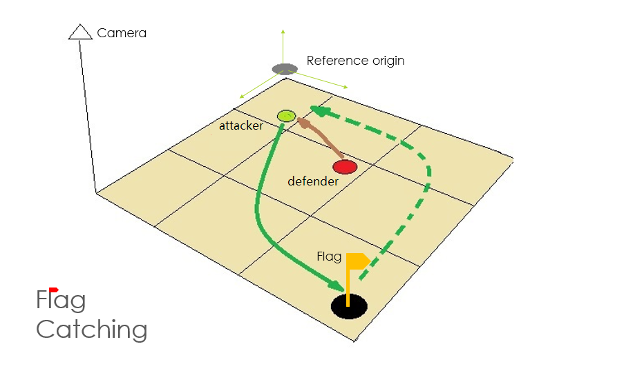
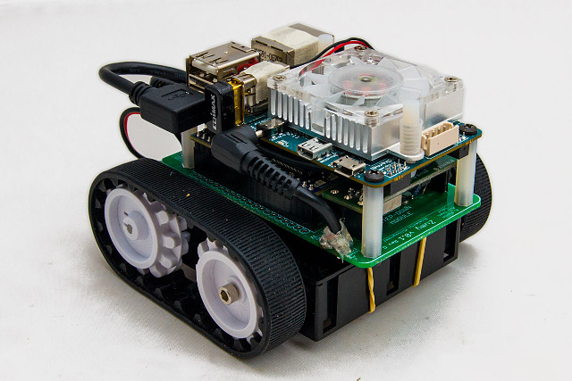
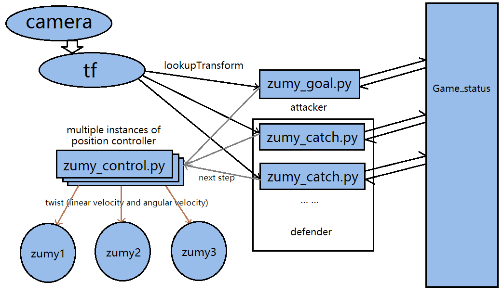
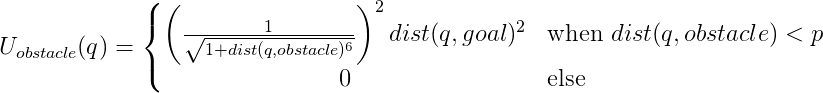
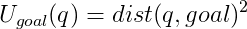
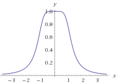
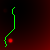

Introduction

Overview
For this project, we set a game called Flag Catching. The rule is quite simple: Two sides play on the ground. One side is the attacker: it tries to catch the flag on the ground, and after that returns to it's home region. The other side is the defender: it tries to catch the attacker. The roles of the attacker and defender is somewhat similar to theif and policeman.
The game ends when the attacker successfully returns to the home region without being caught (the attacker wins), or the defender catches the attacker (the defender wins).
Interesting Parts in This Project
It is fun to watch the game, since the result is unpredicable.
It is related to path planning and control that we learned in the class.
There are some interesting problems to solve in this project:
- How to avoid obstacles and move to a certain place?
- How to locate each object?
- How do the robots make decisions in real time and move smoothly?
Real-World Applications
Automatic industrial fork truck -- It can pick up goods at a given location and carrying it back to an assigned home region (similar to the attacker). The truck should be able to avoid other trucks or people (the defender) during the task.
Design
Design Criteria
- The players follow the game rules.
- The game is played smoothly, in a competitive way.
- The attacker should wisely avoid the defender; the defender should wisely catch the attacker.
- All the robots should stop moving after any side wins.
Our Design
Using a Coordinate Grid
We use a 2D discrete coordinate system for the robots. Every object is inside a square grid, and the playing area is a rectangle. The grid size should be small so that our control is sufficiently precise, but big enough so that we do not lose control of the robots. We need to find a balance between precision and stability.
The advantage of using a coordinate grid is that many path planning algorithms can be directly applied. The disadvantage is that the robots will move in a polyline instead of a smooth curve. This may result in dumb robots and the not very competitive play.
One Attacking Robot, Variable Number of Defending Robots
There is only one attacking robot, while there can be zero or more defending robots.
This decision made our implementation simpler than having multiple attacking robots, since there is no need to wisely assign different attacking robots for different defending robots to catch. It made the game less complicated and perhaps less exciting, but we believe the game is still competitive.
As the next section points out, we do path planning with potential field. The potential field does a good job for a single robot but does not help much in terms of cooperation. If the game is complicated and we do not implement properly, the attacking robots may interfere with each other and cannot reach the destination, in which case the game is not exciting anyway.
Path Planning with Potential Field
For an attacking robot, each defending robot corresponds to a high potential. Initially, the location of the flag corresponds to a low potential. After the attacking robot gets to the flag, the flag no longer has a low potential. Instead, the home region will then have a low potential.
For a defending robot, the attacking robot corresponds to a low potential while other defending robots each correspond a high potential.
When doing path planning, each robot chooses a neighbour grid such that has the lowest potential as its next step. In this way, the robots tend to keep away from the obstacles and get close to its destination.
The path planning is done once a time. We do not have a full path until the game ends.
The problem of the potential field is that the robots may get stuck at a local minima. Also, the potential field may not always give the optimal strategy for the robots.
Global Camera
Since we are using the potential field, we need to know the location of every objects in the game. So we decide to use a global camera over the playing area and put ARTags on everything we need to locate.
The global camera have limited vision. We need to put the camera far enough from the playing area so that the camera can see the entire playing area. However, the camera cannot be too far away because the measurement error seems to increase as the distance increases.
Discrete Moves
The robots take discrete moves. After the potential field yields the next step, the robot will keep moving and will not respond to the changes (such as changes of the locations of other robots) in the playing area until it finishes this step.
This design made our implementation simpler, since the path planner and the motion controller can be separate modules and do not couple with each other. However, it results in slower reaction of the robots.
Asynchronous Moves
The steps for different robots are not synchronized. That is, for example, if the some robot finished its step earlier than others, it will continue to execute its next step and not wait for others to finish their current step.
It turns out that different robots often take different time to finish a single step. According to the game rules, there is really no need for the robots to wait for each other within a step. Therefore, this desicion made our implementation play more smoothly. However, with this design we cannot apply other path planning algorithms that requires the moves to be synchronized (such as dynamic programming alogrithms).
Implementation
Hardware Constructions
-
Zumy is the robot used in this project. It is provided by EECS department in UC Berkeley.
 - N Zumys (N=1,2,3,...) and N+3 ARTags are used.
- The N ARTags are for the Zumys.
- The additional 3 ARTags are used for marking the origin point, the flag and the boundary of the playing area.
- The camera is fixed on the top of a coat rack, and put the origin ARTag on the ground and very close to the rack.
- The origin ARTag marks a corner of the playing area. We use the boundary ARTag to mark the opposing corner of the playing area. (The playing area is a rectangle.)
- The ARTags for the Zumys are installed on the top of the Zumys, in such a way that the +x axis points towards zumys' forward direction.
- All the ARTags should be in the camera's vision. All the ARTags should also have positive coordinates (both x and y) in the coordinate system of the origin ARTag.
- The line x=0 (in the coordinate system of the origin ARTag) is the home region.
- Fully charged batteries for Zumys are desirable.
Code Detail

The core programs are zumy_goal.py and zumy_catch.py. The former runs a ROS node for an attacking Zumy. The behavior of the node is described in another section. The latter runs a similar ROS node, but for a defending Zumy.
These nodes collects information from tf and call tf.lookupTransform to get the coordinates in the coordinate system of the origin ARTag and then convert them into the grid coordinates. They also call functions in exp_quat_func.py (not shown in the picture) to do some other conversions.
zumy_control.py contains the position controller, whose behavior is described in another section. The code is shared among the ROS nodes. But each ROS node has its own instance of the controller so that they can control different Zumys.
pf.py (not shown in the picture) contains some general operations regarding potential field. These include:
- Convert the potential field to an image (using PIL library).
- Find the next step for a given potential field and a source point.
- Plan the entire path assuming that all obstacles are static.
epf.py and gpf.py (the naming is meaningless) are specific potential field implementations. The former is used when the destination is a single point, so it is used for the attacker to catch the flag as well as for the defender to catch the attacker. The latter has some modifications, and is used for the attacker to return to the home region.
Please see the GitHub repository for code.
How It Works
In this section, we describe how an attacking Zumy works. A defending Zumy works almost identically, except that it has a different potential field.
Please refer to README for directions of configuring and running the package.
Initialization
During initialization, the coordinates of the boundary ARTag are read. Thus the size of the playing area is determined. Then the node will wat the user's signal for game start.
Run Zumy Nodes
- After game start, the node runs a infinite loop. In every iteration:
- It read the coordinates of Zumys (
src_coordfor the Zumy under the node's control ("the Zumy"),obst_coordfor the defending Zumys) and the coordinates of the flag (dst_coord). - It will break the loop if it finds that the zumy arrives at (being close enough to) the flag, or it has received the game over message from
Game_statustopic. - If the loop is not broken, then a potential field is constructed. The potential field is described in another section.
- The node then does path planning with the potential field. This yields a grid as the next step for the Zumy. Note that the grid is always next to the current grid of the Zumy, and will not be out of the boundary.
- The next step is sent to the Zumy's position controller. The position controller is described in the next section.
- It read the coordinates of Zumys (
- After the first infinite loop there is another infinite loop. It does almost the same thing except:
- Instead of arriving at the flag, the loop will break when the Zumy arrives at the home region.
- If the Zumy arrives at the home region, then before the loop breaks, the node will send a game over message to
Game_statustopic. - It uses a different potential field that guides the Zumy towards the home region. As an implementation detail, there is no need to read
dst_coordsince the home region is encoded in the potential field.
- After the second infinite loop, the game is over. And the node will let the Zumy stop. Now the user can rearrange the objects on the playing area and then replay the game.
It may be worth mentioning that for a defending Zumy there is not a second infinite loop, because its destination is always the attacking Zumy. And a defending Zumy will send a game over message once it gets close enough to the attacking Zumy.
The Position Controller
The position controller works as follows. The attacking Zumy and the defending Zumys share the same controller.
Please note that we have installed the ARTags on Zumys so that the x axis points towards the forward direction.
- The controller knows which Zumy it is controlling ("the Zumy"). Now it receives a destination grid.
- It loops until the Zumy is heading towards the specified grid. In every iteration of the loop:
- It translate the destination grid into the Zumy's coordinate system. We will call the coordinates x and y.
- (Simple filter) If the destination is too far away from the Zumy's current location, considering the fact that the path planner always gives a neighbour grid, we assert that this destination grid is invalid and it might be a result of mesurement errors. We will do nothing in this iteration.
- If the destination is valid, it check if x is positive and the absolute value of y is smaller than a threshold. If so, then the loop will terminate. Otherwise, the controller sends zumy a pure rotational velocity that has the same sign as y.
- The controller will sleep for 0.1 second before the next iteration.
- Then, It loops until the Zumy arrives (within tolerance) at the specified grid. It does almost the same thing except:
- After applying the simple filter, it checks if x is positive. If not, then the Zumy has arrived and the loop will terminate.
- If the Zumy has not arrived, then y is also taken into consideration: If the absolute value of y is larger than a threshold, then the Zumy deviates too much from the planned path. In this case, the controller sends a twist that has a linear velocity as well as an angular velocity. Otherwise, the Zumy is still in the right track, and the controller sends only a linear velocity.
Note that in Step 2.2, when the Zumy deviates too much, we do not stop it and let it turn around like we did in Step 1.3. Instead, we kept the linear velocity. Thus the Zumy will not shift frequently between rotating and moving forward and get stuck under some critical conditions.
Also note that, the controller used to accept arguments specifying the linear velocity and angular velocity to accommodate different Zumys. After the new velocity controller being installed into the Zumys, we specify a unified velocity for all the Zumys.
Coordinate Transform
There are two types of coordinate transforms in our code.
The first one is translating an ARTag into the origin ARTag's coordinate system. We use tf.lookupTransform for that.
The other one is translating the destination grid into the Zumy's coordinate system, as described in the last section. We cannot use tf.lookupTranform for this because we do not have an ARTag at the destination grid (and tf.lookupTransform requires one). Therefore, we use the functions in exp_quat_func.py from Lab3.
The Potential Field
- Using the following function in our code:

- where p is a positive constant denoting the distance of influence of the obstacle.
- By properly scaling, the Zumys can keep an appropriate distance from obstacles.
 ←The contribution to the potential from an obstacle. - For the attacking Zumy, the potential field is saved to an image file (
out.png) after every path planning. Open the image file while the game is running, and if the image viewer can automatically reloads the image when it is changed (the image viewer on the Lab computers seems to have that feature), then the user can see the game state dynamically on the screen.

Brighter means higher potential.
Note that in the above picture the entire path is drawn in green. This is only for testing purpose and is not the behavior of the current implementation.
Results
Motion of the Zumy
In some cases the attacker successfully reaches the flag and returns home. In other cases, the defender catches the attacker. We conclude that the system is working properly: the program logic is correct, and Zumys are moving properly, i.e. following the planned path.
We see noticeable pauses between the steps. This is because for every step there is a beginning phase in which the Zumy is only rotating.
We do not see any Zumy get stuck (keeps changing direction and does not move forward) within a step. However, for the most of the time, we see that the Zumys are moving with only a linear velocity or only an angular velocity.
We did not take measurements, but it seems that throughout the game process, the Zumys spend most of their time on rotating.
Coordinate transform
We observed that the measurement error from the camera is within 2cm. It is acceptable for our purpose (we set the grid size to be 5cm x 5cm), and the Zumys can follow the desired path.
We also noticed that the origin tag should be put closer to the rack (camera) for better accuracy.
Final Video, picture
Please note that in the video the attacking Zumy is labeled "runner" and the defending Zumys "catcher".
Conclusion
- The players completely follow the game rules.
- We implemented the logic correctly, and have a working potential field and path planner.
- The game is played reasonably smoothly in that:
- (+) The Zumys follow the planned path quite well, since we have minimized the impact caused by measurement errors.
- (+) Every game comes to an end, since the Zumys do not get stuck.
- (-) However, the pure rotating phase took too much time for the Zumys. It looks like the Zumys are not always moving.
- (-) The new velocity controller for the Zumys also adds to some jerks.
- The game is played in a competitive way, and the Zumys are moving correctly (if not cleverly), because:
- (+) Every side has a chance to win.
- (+) The Zumys do not waste time on anything not benefitial (for example, stay still, move in the opposite direction to its target, or waiting for other Zumys to finish a step).
- (+/-) The potential field does not give any clever moves. But since both the attacker and the defender use the potential field, the game is fair and still competitive.
- (-) However, the Zumys are moving slowly due to limited measurement rates. This might make the game look less exciting. If we make the Zumys move faster, then the measurements are not accurate and it is more likely that Zumys will run out of control.
- All the Zumys will stop moving after receiving a game over message from
Game_statustopic (i.e. some Zumy wins).- There is a small drawback: if the game over message is received while a Zumy is executing the last step, it will not stop until the last step is finished. This is not very obvious and Zumys will stop quickly as the last step only take a little time.
Here are the difficulties we encountered:
- Zumys lose connection to computers frequently.
- It was difficult to control Zumys' velocity. Different Zumys (or Zumys with different batteries) will respond differently to the same velocity value sent from the program.
- The axis seen on rviz was flipping frequently. This causes completely wrong coordinates and will fool the controller into giving wrong instructions.
- We believe this is due to the errors caused by the camera. And it usually happens when two ARTags get too close.
- We tried to keep the linear velocity for the Zumys (get rid of the pure rotation phase), in order to get them moving more smoothly. However, we found that it would be harder for the Zumys to follow the planned path.
Flaws and Improvements in the Future
- A flaw in our design is that when executing a single step, the Zumy is not responding to the changes in the playing area (due to discrete moves).
- For example, when the attacking Zumy is turning around, a defending Zumy is comming close. The attacking Zumy will not notice this and keeps rotating, then get caught by the defender.
- The better idea for the attacking Zumy might be that it should give up the current step, stop turning around (and probably do another path planning) and move forward so that it keeps away from the defending Zumy.
- All the Zumys should stop immediately instead of finishing its current step then stop after receiving the game over message.
- This is easy to fix. Just let the position controller check whether the node has received the message.
- The filter used for measurement data can be improved.
- We can implement a kalman filter for better measurement accuracy.
- We can make some modifications to the potential field so that the Zumys will not be trapped at a local minima.
- We can try other path planning algorithms so that Zumys in the same side can cooperate.
Team members
Liu Yang
A senior, exchange student from China, Beijing Institute of Technology majoring in Electrical Engineering.
Hsiu-Wei Chang
A junior, exchange student from Taiwan, National Changhua University of Education majoring in Electrical Engineering.
Rui Zhang (@z-rui)
I am a junior student from Nanjing University of Science and Technology. Good at Python and C programming. As an exchange student in Berkeley I took EE C106A, EE 120 and CS 61C this semester.
Yang Yue
A senior, exchange student from China, Beijing Institute of Technology majoring in Electrical Engineering.
Additional Materials
We looked at this page when implementing the potential field.